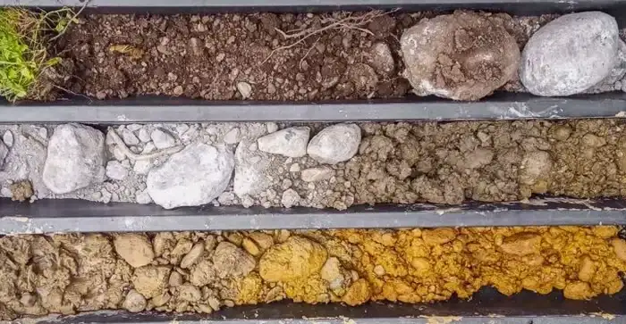

Our Melbourne office delivers comprehensive geotechnical services across the city’s diverse urban and suburban landscapes. From initial site characterization through foundation design and construction monitoring, we provide integrated solutions tailored to local conditions. Our team combines consolidated regional experience with calibrated in-situ testing and code-compliant reporting to support projects of all scales. Whether you are planning a high-rise development in the CBD or a residential subdivision in the outer suburbs, we offer the full spectrum of subsurface investigation, laboratory analysis, and geotechnical advice. For specialized assessments, our porchet double-ring infiltrometer and flat dilatometer testing provide critical data for your project.
